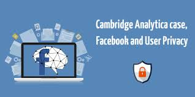
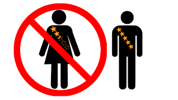

Ética en el Desarrollo de Software

La Importancia de la Ética
Crear programas no es solo hacer que algo funcione, también se trata de hacer cosas buenas para todos. La ética en el software es como tener un código de conducta para programadores, para que lo que hagan sea útil y no cause problemas.
¿Por qué es importante ser ético en el software?
En el mundo digital de hoy, el software está en todas partes, así que es súper importante que se haga de manera responsable. Esto significa pensar en cómo afecta a la gente, cuidar su privacidad y evitar que los programas sean injustos.
Reglas Básicas para un Software Ético
- Sé claro: Explica cómo funciona tu programa, qué datos guarda y para qué los usa.
- Sé seguro: Protege a los usuarios de hackers y otros peligros.
- Cuida la privacidad: Maneja la información personal con cuidado y sigue las leyes.
- Piensa en los demás: Haz software que ayude a la sociedad y no discrimine a nadie.
Problemas Éticos Comunes
- Fallos de seguridad: Cuando un programa tiene errores y la información de la gente se filtra.
- Mal uso de datos: Cuando las empresas guardan información sin permiso y la usan para ganar dinero.

- Programas injustos: Cuando un programa trata mejor a algunas personas que a otras.
- Programas que se rompen rápido: Cuando hacen programas para que se dañen pronto y tengas que comprar uno nuevo.
Casos Reales
- Cambridge Analytica: Usaron datos de Facebook para influir en elecciones, ¡sin permiso!

- Uber y el Uso de "GreyBall" para evadir regulaciones: Uber desarrolló un software llamado Greyball , que permitía identificar y evitar a reguladores gubernamentales en ciudades donde su servicio no estaba autorizado.

- Inteligencia Artificial en Amazon y Sesgo en la Selección de Personal: Amazon implementó un sistema de inteligencia artificial para la contratación de empleados, pero el algoritmo presentaba un sesgo contra mujeres , ya que se entrenó con datos históricos donde predominaban los hombres en roles tecnológicos.

¿Cómo hacer software ético?
- Sigue las leyes: Infórmate sobre las reglas de privacidad y seguridad.
- Piensa en las consecuencias: Antes de lanzar un programa, analiza si puede causar problemas.
- Aprende siempre: Mantente al día con las nuevas reglas y buenas prácticas.
- Sé transparente: Explica a los usuarios cómo funciona tu programa y qué datos guarda.
Si seguimos estas reglas, el software puede ser una herramienta increíble para ayudar a todos!
Recursos adicionales para más información